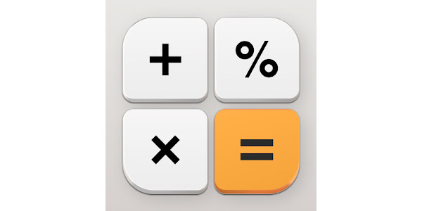
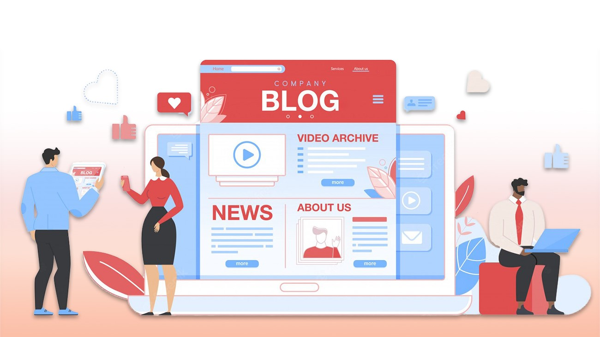

"Learning Web Development, Chief Product & Opration Officer, Certified Prompt Emgineer"

Name: Rahul Anand Singh
Email: rahulanandsingh0067@gmail.com
Phone: +91-8709089736
Web Development
Project Management
Operation Management
Customer Success
Search engine oprimization
I am an aspiring web developer with a growing foundation in HTML, CSS, and JavaScript, combined with hands-on experience in project management and operations. My journey into tech is driven by curiosity, problem-solving, and a strong desire to build meaningful digital experiences that are both functional and user-focused. Currently, I am focused on developing my front-end development skills, creating responsive and visually engaging websites while continuously improving my understanding of modern web practices. I enjoy turning ideas into real, working interfaces and pay close attention to structure, performance, and user experience. For me, coding is not just about writing lines of code, it’s about building solutions that people can actually use and benefit from. Alongside my technical learning, I bring practical experience in project management and operations. I understand how to plan, organize, and execute tasks efficiently while keeping timelines, quality, and communication in check. This background helps me approach development projects with a structured mindset, ensuring clarity in execution and smooth collaboration when working in a team environment. I also hold a certification in prompt engineering, which gives me an edge in working with AI tools effectively. I know how to communicate clearly with AI systems to generate accurate, useful outputs, whether it’s for coding assistance, content creation, or workflow optimization. This skill allows me to work smarter, speed up processes, and enhance productivity in both technical and non-technical tasks. What sets me apart is my ability to bridge the gap between technical skills and operational thinking. I don’t just focus on building things, I focus on building them efficiently, with a clear purpose and a structured approach. I am comfortable adapting, learning quickly, and taking ownership of my work, which helps me grow consistently in a fast-changing environment. As I continue to learn and evolve, my goal is to become a well-rounded developer who can contribute to impactful projects and deliver high-quality digital solutions. I am actively working on improving my skills, building projects, and expanding my knowledge to stay aligned with industry standards. I am open to opportunities where I can learn, contribute, and grow as a developer while adding value through my combined expertise in web development, project management, and AI-driven workflows.
Here are some of the projects I have worked on while learning web development, showcasing my skills in HTML, CSS, and JavaScript.

A simple interactive game where two players can play tic tac toe with real-time win detection.
View Project
A task management app to organize daily activites with add/delete features.
View ProjectAn online shopping platform with product listing, cart, and checkout features.
View Project
A responsive Calculator application that performs basic arithematic operations with a clean user interface.
View Project
A platform to manage wedding planning including venues, vendors, and budgeting.
View Project
A clean and interactive music player built with HTML, CSS, and JavaScript that lets users play, pause, and navigate songs with a dynamic user interface.
View Project
A responsive blogging website that lets users read, explore, and organize articles with a clean layout built using HTML, CSS, and JavaScript.
View Project